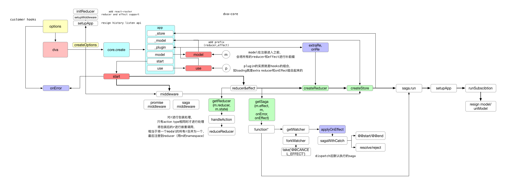

前言
从接触react开始就是使用dva作为入门框架来学习的，她封装完整，简约的api让新入门的新手也能跟着十二步完成curd-demo。直到最近完成了dva底层框架的代码阅读后，我终于拾起了荒废已久的dva源码阅读计划，看看她是怎么通过model来实现dva框架的整合。
dva 是守望先锋中的一名英雄，是一名操作可飞行机甲的韩国人气少女偶像，拥有极强的机动性和防御力，是冲散敌人后排的强力英雄。阿里果然隐藏着一众死宅程序员。
流程图

修改浏览器缩放比率查看大图
从dva2开始
dva2.0是17年底发布的，不仅更新了react-router4,更提供了许多优化，如dispatch => promise、effect执行前后后会派发type/@@start、type/@@end事件，可以借用此特性实现put代码的同步执行。
而且从2.0开始，dva对核心数据流处理部分进行了拆分，称为dva-core,这一部分只实现redux和redux-saga的整合，以及model api的实现。
create
1 | export function create(hooksAndOpts = {}, createOpts = {}) { |
hooksAndOpts是我们初始化时传入的hooks,而createOpts则是框架内部传入的参数（如react-router的middleware和reducer）,
create的作用其实是初始化我们常用的app对象。
_models会存贮我们定义的所有model,通过model方法来注册，并在注册的时候为reducer和effect添加namespace，方便日后dispatch.
_store则是在start时会将生成的store注册到这里。
_plugin存储的是dva支持的所有hook，除了extraEnhancer和_handleActions其它都是数组形式的，支持多次注册。
use则是注册plugin的作用，dva的plugin实际上是hooks的组合对象，如dva-loading是由extraReducer和onEffect组合而成的。
model
1 | function model(m) { |
model的作用已经说过，将传入的model注册到app的_model中。
start
start是dva-core的核心，完成所有的框架注册。
1 | // Global error handler |
第一步完成onError的注册，如果有自定义规则会进行整合
第二部提取reducer和effect1
2
3
4
5
6
7
8
9
10
11const sagas = [];
const reducers = { ...initialReducer };
for (const m of app._models) {
reducers[m.namespace] = getReducer(
m.reducers,
m.state,
plugin._handleActions
);
if (m.effects)
sagas.push(app._getSaga(m.effects, m, onError, plugin.get('onEffect')));
}
getReducer的过程中如果没有使用自定义钩子则会使用系统默认的规则。
1 | function handleAction(actionType, reducer = identify) { |
reducer先是被进行了一层封装，只有type相同时才会进行执行，后是进行了整合，将多个reducer合并为了一个嵌套调用的reducer。
最后注册到外层的reducer[namespace]中。
getSaga则进行了更多深层的操作。1
2
3
4
5
6
7
8
9
10
11
12
13
14export default function getSaga(effects, model, onError, onEffect) {
return function*() {
for (const key in effects) {
if (Object.prototype.hasOwnProperty.call(effects, key)) {
const watcher = getWatcher(key, effects[key], model, onError, onEffect);
const task = yield sagaEffects.fork(watcher);
yield sagaEffects.fork(function*() {
yield sagaEffects.take(`${model.namespace}/@@CANCEL_EFFECTS`);
yield sagaEffects.cancel(task);
});
}
}
};
}
可以看到是返回了匿名的生成器函数，fork了watcher，然后注册了一个取消watcher的watcher。
1 | function getWatcher(key, _effect, model, onError, onEffect) { |
getWatcher的作用是根据传入的参数来决定监听的方式。来看一下sagaWithOnEffect的具体实现。
1 | function* sagaWithCatch(...args) { |
在被执行之前，sagaWithCatch需要被onEffect函数进行初次处理，而sagaWithCatch则比较复杂，会接收resole和reject，这是个promiseMiddleware做处理接收到的。后面再来讨论。
可以看到saga被执行前后会分别派发对应的start、end事件，并将saga返回的结果通过resolve传入。
第三步，创建store
1 | const store = (app._store = createStore({ |
createReducer是将 onReducer和extraReducer进行了整合，并传递给redux,
enhancer部分则是将sagaMiddleware和promiseMiddleware进行了整合，同时还有外部传入的middleware。
第四步，redux订阅注册1
2
3
4
5
6const listeners = plugin.get('onStateChange');
for (const listener of listeners) {
store.subscribe(() => {
listener(store.getState());
});
}
第五步，注册杂项1
2
3
4
5
6
7
8
9
10
11
12
13
14
15
16
17
18// Run sagas
sagas.forEach(sagaMiddleware.run);
// Setup app
setupApp(app);
// Run subscriptions
const unlisteners = {};
for (const model of this._models) {
if (model.subscriptions) {
unlisteners[model.namespace] = runSubscription(
model.subscriptions,
model,
app,
onError
);
}
}
第六步，更新model和unmodel的hook
1 | function injectModel(createReducer, onError, unlisteners, m) { |
因为项目已经start,所以要动态添加model不仅要变化reducer还有effect，所以需要重新注册。
至此所有的注册流程已经完成，但是我们还有promiseMiddleware没有讲！！！
promiseMiddleware
1 | export default function createPromiseMiddleware(app) { |
promiseMiddleware将传入的action进行判断是否在app中注册对应effect，如果注册，则将action变为promise形式，所以我们在dispatch后得到的其实是promise对象，从而可以结合effect处特殊的处理方式，直接通过.then得到结果，从而改变redux的数据处理方式。